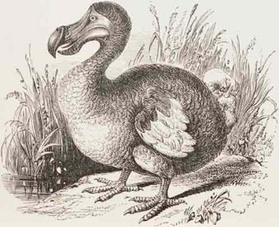

ყოველდღიურად ველური ფაუნის უამრავი წარმომადგენელი იღუპება. განსაკუთრებით მწერები და სხვა პატარა ზომის ცხოველები. გადაშენების საფრთხეში მყოფი ცხოველების ექსპერიმენტებით ბევრი რამის გაგება შეიძლება:
რითი იკვებებიან ისინი, რამდენად ჯანმრთელები არიან და ა.შ. ამ ცნობებზე დაყრდნობით მეცნიერები ცდილობენ, იშვიათ ცხოველთა გადაშენების მიზეზების დადგენას.
ყოველი 100 ცხოველიდან, რომელთაც დედამიწაზე უცხოვრიათ ოდესმე, 99 უკვე გადაშენებულია და ბუნებას აღარასოდეს დაუბრუნდება.
ვეფხვი კატისებრთა ოჯახის ყველაზე დიდი წარმომადგენელია, სხეულის სიგრძე 1,4-2,8 მეტრა, კუდის 0,6-1,1 მეტრა, წონა 100-300 კგ. წაგრძელებული სხეული მოხატული აქვს განივი ზოლებით. გავრცელებულია: ჩრდილოეთ კორეაში, ჩინეთში, ინდოეთში, ინდოჩინეთში, მალაის არქიპელაგზე, ჩრდილოეთ ირანში, უსურისა და ამურის მხარეებში, თალიშში, ამუდარიის ხეობაში, იშვიათად თურქმენეთში.
დაახლოებით 100 წლის წინ მსოფლიოში, 100 000 ვეფხვი ბინადრობდა. დღეს მხოლოდ 3 200 დარჩა და ეს რაოდენობაც დღითი დღე მცირდება.
არსებობდა ჩანთოსანი ცხოველი ტასმანიური ვეფხვი. მათ ვეფხვებს იმიტომ უწოდებდნენ, რომ ზოლებიანი ბეწვი ჰქონდათ. ეს ცხოველები უკვე გადაშენდნენ, რისი მიზეზიც მათზე ნადირობა, დაავადებები და საცხოვრებელი ადგილების დაკარგვა გახდა. თუ დროზე არ მიიღება, გადამჭრელი ზომები, ვეფხვებსაც გადაშენება ემუქრებათ.

ეს დიდი ფრინველი გახლავთ დოდო. მისი უკანასკნელი ინდივიდი 300 წლის წინ მოკლეს. ეს ფრინველი ინდოეთის ოკეანის ერთ-ერთ კუნძულზე იყო გავრცელებული. ფრინველის ყოველი რვა სახეობიდან ერთს გადაშენების საფრთხე ემუქრება. ეს ნიშნავს, რომ უახლოეს წლებში, ფრინველის 1 200 სახეობა საერთოდ გაქრება.
ფრინველებიდან დაცვა ყველაზე მეტად თუთიყუშებს სჭირდებათ. სურათზე ნაჩვენებია “ალისფერი არა”. ამ ფრინველებს უკანონოდ იჭერენ და ყიდიან, თანაც მათი საცხოვრებელი ტყეები იჩეხება.
თუთიყუშების სახეობების დაახლოებით მესამედს გადაშენება ემუქრება.
იაგუარები განსაკუთრებული ცხოველები არიან. ეს იშვიათი არსებები საოცარი სილამაზით გამოირჩევიან. იაგუარები ამერიკის ბინადარი ყველაზე დიდი კატები არიან.
ამ ცხოველებს კანონი იცავს, თუმცა ადამიანები მათზე მაინც ნადირობენ და მათ საცხოვრებელ ტყეებს ჩეხენ, რაც იაგუარების შემცირებულ რაოდენობაზე აისახა. ასე თუ გაგრძელდა ვეფხვის მსგავსად იაგუარიც გადაშენდება.
ავტორი:
გიორგი კავსაძე
28.10.2024